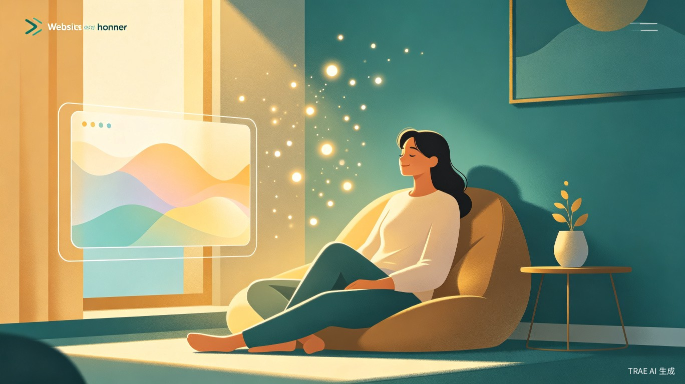
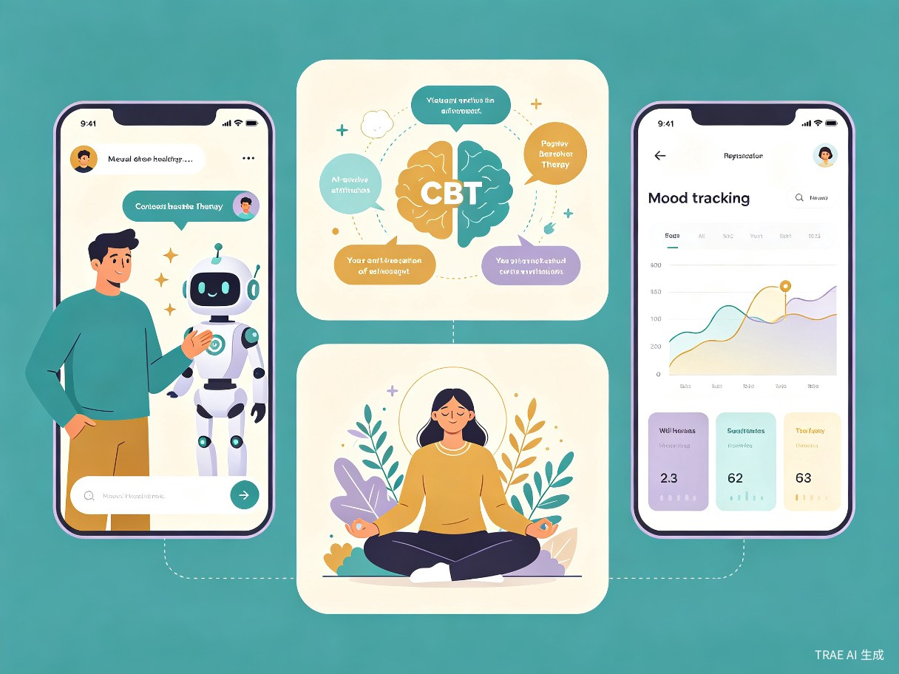

1 创意名称与创意介绍
MindHaven 心灵港湾 — 你的专属 AI 心理咨询师
想解决什么问题：当代社会节奏加快，焦虑、抑郁、压力等心理问题日益普遍，但专业心理咨询资源严重不足、费用高昂、预约困难。许多人因隐私顾虑或经济压力，无法及时获得心理支持，导致小问题演变为严重心理危机。
为什么会想到做这个：我们观察到身边越来越多朋友在职场压力、学业焦虑和人际关系中挣扎，却苦于找不到合适的倾诉渠道。AI 大语言模型技术的成熟让我们意识到，可以构建一个基于专业心理模型的智能咨询系统，让每个人都能随时随地获得温暖而专业的心理支持。
大概是什么产品：MindHaven 是一款基于 Web 的 AI 心理咨询平台，融合认知行为疗法（CBT）、正念减压疗法（MBSR）、情绪聚焦疗法（EFT）等专业心理模型，通过自然语言对话为用户提供个性化的心理评估、情绪疏导、认知重建和成长建议。
核心使用流程
2 目标用户及痛点
面向哪些用户
高校学生
面临学业压力、考试焦虑、社交恐惧和就业迷茫，是心理问题高发群体，但求助意识薄弱。
职场白领
承受 KPI 压力、996 加班文化、职场人际关系困扰，长期处于亚健康心理状态。
新手父母
面对育儿焦虑、产后抑郁、家庭关系调整，需要情绪疏导和心理建设支持。
中老年群体
经历退休适应、空巢孤独、慢性病心理负担，需要陪伴式心理关怀。
在什么场景下使用
用户在深夜失眠无法入睡时，打开 MindHaven 与 AI 咨询师进行放松对话；在工作遭遇挫折情绪低落时，通过认知重建练习调整心态；在重要考试前感到焦虑时，使用正念呼吸引导缓解紧张；在人际关系冲突后，通过情绪聚焦疗法梳理内心感受。
当前痛点
- 专业资源稀缺：中国每 10 万人仅有约 4.6 名心理咨询师，远低于发达国家水平，优质资源集中在一二线城市。
- 经济门槛高：单次心理咨询费用通常在 300-1000 元，长期咨询对普通家庭构成显著经济负担。
- 隐私顾虑重：许多人对面对面咨询感到羞耻或担忧隐私泄露，尤其是职场人士和小城镇居民。
- 时间不灵活：传统咨询需预约固定时段，无法满足突发性情绪困扰和深夜求助需求。
- 质量参差不齐：心理咨询行业缺乏统一标准，用户难以辨别咨询师资质，容易遭遇不专业甚至有害的"咨询"。
3 核心功能与技术方案

专业心理模型驱动
MindHaven 的核心优势在于将专业心理模型深度融入 AI 对话引擎。系统内置以下疗法框架：
认知行为疗法 (CBT)
识别并纠正消极自动思维，通过认知重构帮助用户建立更健康的思维模式，适用于焦虑、抑郁等常见问题。
正念减压 (MBSR)
引导用户进行正念呼吸、身体扫描等练习，提升当下觉察能力，有效缓解压力和慢性焦虑。
情绪聚焦疗法 (EFT)
帮助用户识别、接纳和转化核心情绪，特别适用于人际关系困扰和情感创伤修复。
接纳承诺疗法 (ACT)
引导用户接纳而非逃避负面情绪，明确个人价值观并采取承诺行动，实现心理灵活性提升。
智能功能矩阵
智能情绪评估
通过自然语言分析用户情绪状态，生成多维度心理健康画像，动态追踪情绪变化趋势。
个性化疗愈方案
基于评估结果自动匹配最适合的心理疗法和练习计划，提供定制化的心理成长路径。
危机预警系统
实时监测高风险信号（如自伤倾向），自动触发安全协议，提供紧急求助资源和转介建议。
成长日记与追踪
记录每次对话的关键洞察和练习成果，可视化呈现心理成长轨迹，增强用户自我觉察。
技术架构
4 价值与意义
社会价值
MindHaven 能够大幅降低心理求助门槛，让偏远地区、经济困难群体也能获得专业级心理支持。通过 AI 的 24 小时全天候服务能力，填补传统心理咨询的时间空白，特别是在深夜等高危时段提供即时陪伴。产品有助于消除心理健康污名化，让寻求心理帮助变得像体检一样自然。
商业价值
中国心理健康市场规模已超过 800 亿元，且年均增速超过 15%。MindHaven 以 AI 降低服务边际成本，可实现规模化盈利。通过免费基础服务 + 高级功能订阅 + 企业 EAP 定制三重商业模式，覆盖 C 端和 B 端市场，具备强劲的商业增长潜力。
效率提升
AI 咨询师可同时服务数千用户，响应时间从传统咨询的"天"级缩短至"秒"级。智能评估系统将首次心理筛查时间从 45 分钟压缩至 5 分钟，大幅提升心理健康筛查效率。AI 还能辅助专业咨询师进行初步分诊，优化有限人力资源的配置。
5 产品愿景
MindHaven 心灵港湾的长期愿景是成为每个人的"心理急救箱"和"心灵健身房"。我们相信，AI 技术不应仅用于提升生产力，更应用于守护人类最珍贵的内在世界。
未来，MindHaven 将持续深化与心理学界的合作，引入更多循证疗法（如辩证行为疗法 DBT、眼动脱敏再加工 EMDR），构建全球领先的中文 AI 心理健康知识图谱，并探索与医疗机构、学校、企业的深度合作模式，真正实现"心理服务普惠化"的使命。
24/7
全天候在线陪伴
4+
专业疗法模型
0
等待时间
100%
隐私安全保障